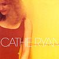

Celtic Lyrics Corner > Artists & Groups > Cathie Ryan > Somewhere Along The Road > Rathlin Island (1847)
|  | Rathlin Island (1847) |
| Credits : | Cathie Ryan |
| Appears On : | Somewhere Along The Road |
| Language : | English & Gaeilge (Irish Gaelic) |
| Lyrics : | English Translation : |
|
I haven't slept since Wednesday evening
There is no sleep with all this grieving No music here where once was singing Where once was singing |
|
|
We are like ghosts here on Rathlin Island
All fleshless bone, all shamed and silent Our feet are stone where once was dancing Where once was dancing |
|
|
Chorus:
Sail away, love, from the island Sail out on the sea Turn a blue eye back on Rathlin |
|
| An baile i mo chroí | The home in my heart |
|
The waves are pounding Slough na Morra
Hundreds will sail, hundreds left mourning We will look back, beimid ar marthan |
|
| Beimid ar marthan | We will survive |
|
Ochon is ochon, the hills are wailing
Carve our names in Clogh na Screeve Ochon is ochon, the ship is sailing |
|
| In ainm Dé, in ainm Dé a rach faimíd | In the name of God, in the name of God we go |
|
Today I walk Raghery's headland
The welcome is warm here on the island Seventy strong, it's hard to leave them It's hard to leave them |
|
| (Chorus 2x) |